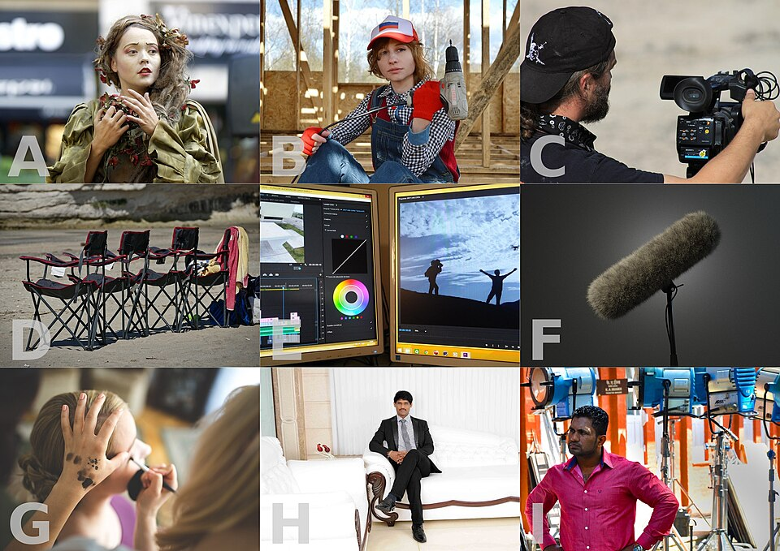
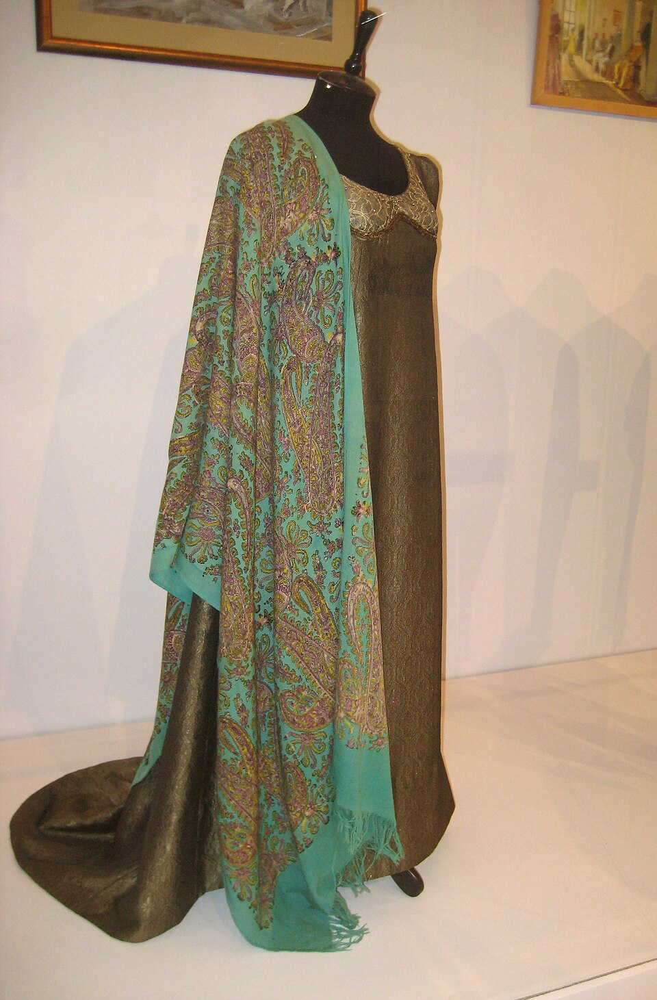

Le manuel du décor
Direction artistique et décoration de cinéma, expliquées simplement. Tu sais déjà rendre un espace beau. Ici, tu vas apprendre à le rendre vrai, utile, et bavard — un décor qui raconte l'histoire à la place des dialogues.

Avant de commencer
Décorer un salon et décorer un plateau de tournage, ce sont deux métiers qui utilisent les mêmes gestes pour des raisons opposées.
Le client est celui qui habite. Le lieu doit être agréable, fonctionnel, durable. On regarde depuis partout. La réussite : on s'y sent bien.
Le client est la caméra. Le lieu doit être crédible, lisible, et raconter quelque chose. On regarde depuis un seul point à la fois. La réussite : on ne remarque rien — et pourtant on a tout compris.
Les trois questions que se pose une cheffe décoratrice
- Qui vit ici ? Pas « quel style » — qui. Son âge, son argent, son métier, ses manies, ce qu'il cache.
- Que doit comprendre le spectateur en trois secondes ? Un plan dure rarement plus longtemps. Si le décor met dix secondes à parler, il est muet.
- Où sera la caméra ? Ce qui n'est pas dans le cadre n'existe pas. Ce qui est derrière la tête de l'acteur, en revanche, sera vu pendant toute la scène.
Un décor de cinéma n'est pas un lieu. C'est un portrait. Tu ne meubles pas une pièce, tu écris la biographie de quelqu'un avec des objets.
Le portrait par le vide
Choisis une pièce de ta maison. Photographie-la telle quelle.
- Retire trois objets qui disent quelque chose sur la personne qui y vit. Rephotographie.
- Ajoute trois objets qui appartiendraient à quelqu'un d'autre : un étudiant fauché, une femme qui vient de divorcer, un homme qui prépare un départ. Rephotographie à chaque fois.
- Montre les quatre photos à quelqu'un, sans rien expliquer, et demande : « Qui habite ici ? »
Ce que tu apprends : combien peu d'objets suffisent à changer entièrement une identité. C'est ton super-pouvoir de décoratrice.
Qui fait quoi dans un décor
Sur un tournage, le décor est fabriqué par une équipe entière. Voici l'organigramme, du haut vers le bas — et surtout, où toi tu commenceras.
| Poste | En une phrase | Ce qu'elle/il ne fait PAS |
|---|---|---|
| Chef·fe décorateur·rice | Décide de l'univers visuel du film avec le réalisateur et le chef opérateur. Signe le style, tient le budget. | Ne va pas acheter les coussins. |
| Directeur·rice artistique | Traduit la vision en plans, en délais et en équipes. C'est le bras exécutif. | Ne redéfinit pas le style tout seul. |
| Ensemblier·ère | Le poste le plus proche de ton don. Meuble et habille les décors : mobilier, tissus, tapis, rideaux, tableaux, plantes. | Ne gère pas les objets que les acteurs manipulent. |
| Accessoiriste | Gère tout ce qu'un acteur touche : la tasse, le pistolet, la lettre, le téléphone. Et les doublons en cas de casse. | Ne pose pas les rideaux. |
| Chef·fe constructeur·rice | Fabrique : cloisons, murs mobiles, faux plafonds, praticables. | Ne choisit pas les couleurs. |
Le vocabulaire à connaître (clique pour retourner la carte)
Lis les génériques
Prends un film que tu aimes. Regarde le générique de fin en entier — oui, en entier.
- Note tous les postes du département artistique et leur nombre.
- Cherche le nom du chef décorateur, puis sa filmographie : ses autres films se ressemblent-ils ?
- Écris trois phrases : qu'est-ce qui, visuellement, semble être sa signature ?
Ce que tu apprends : les décorateurs ont un style reconnaissable, comme les réalisateurs. Tu vas commencer à construire le tien.
Lire un scénario
Un scénario n'est pas un roman : c'est un bon de commande déguisé. Ton travail commence par le lire trois fois, et à chaque fois avec des lunettes différentes.
Tu lis comme une spectatrice. Tu ne notes rien. Tu ressens. À la fin, écris une seule phrase : de quoi parle vraiment ce film ?
Tu surlignes chaque décor : intérieur/extérieur, jour/nuit, combien de scènes s'y passent. Un décor qui revient six fois mérite six fois plus de budget qu'un décor vu une fois.
Tu notes tout ce qui est nommé ou touché. Une lettre, une bague, un couteau de cuisine. Rien n'est écrit par hasard dans un scénario.
La fiche de décor
Pour chaque lieu, tu remplis une fiche. Toujours la même. C'est ce document que tu montreras au réalisateur, et c'est lui qui te fera passer pour une professionnelle dès ton premier stage.
Identité
- Qui vit là ? Sarah, 34 ans, infirmière de nuit, seule depuis 8 mois.
- Depuis quand ? 3 ans — donc des traces, pas des cartons.
- Combien d'argent ? Juste assez. Meubles de seconde main, un seul objet cher.
- Que cache-t-elle ? Elle ne dort plus. Il faut le voir sans le dire.
Traduction concrète
- Palette : vert d'eau délavé, bois clair, un accent rouge unique.
- Matières : textile usé, plastique, formica. Rien de neuf.
- Lumière : deux lampes seulement, jamais le plafonnier.
- Le détail qui parle : le canapé est fait comme un lit. Elle y dort.
Chaque fiche doit contenir un seul détail que personne ne remarquera consciemment, mais qui fera comprendre le personnage. Un seul. Deux, c'est déjà de la démonstration.
Vouloir tout dire. Un décor surchargé de symboles se met à crier, et le spectateur décroche. Le bon décor chuchote une seule fois.
Dépouille une scène réelle
Voici une scène. Lis-la, puis remplis une fiche décor complète sur le modèle ci-dessus.
INT. CUISINE — PETIT MATIN
MARC, 52 ans, en costume, mange debout au-dessus de l'évier. Il regarde une enveloppe posée sur la table, sans la toucher.
Sa fille CLARA, 19 ans, entre en manteau, sac sur l'épaule.
CLARA — Tu l'as ouverte ?
MARC — Pas encore.
CLARA — Elle est là depuis mardi.
Clara prend l'enveloppe, hésite, la repose exactement au même endroit. Elle sort.
Marc continue de manger.
- Qui vit là ? Depuis quand ? Avec quel argent ? Qu'est-ce qui a changé récemment ?
- Quelle palette ? Quelles matières ? Quelle lumière à cette heure-là ?
- Trouve le détail qui parle — celui qui dit qu'il manque quelqu'un dans cette cuisine.
- Liste les accessoires de jeu (ce que les acteurs touchent) séparément du reste.
La couleur
Trois mots suffisent à décrire n'importe quelle couleur, et à en parler comme une pro :
Quelle couleur c'est. Rouge, bleu, vert. C'est la position sur la roue chromatique.
À quel point elle est intense. Un rouge pompier est saturé, un rose poussière ne l'est pas. Baisser la saturation = rendre réaliste.
À quel point elle est claire ou sombre. C'est ce qui crée le contraste — donc la lisibilité du plan.
Si un décor te semble « faux » ou « toc », c'est presque toujours un problème de saturation trop haute. La vraie vie est délavée. Baisse tout de 20 %, ça devient crédible.
Le nuancier — clique pour explorer
La couleur comme personnage
Dans un film bien construit, une couleur n'est jamais décorative : elle est attribuée. À un personnage, à un lieu, à un état émotionnel. Puis elle se déplace.
- Le personnage porte du bleu au début, du rouge à la fin → il a changé de camp.
- La maison de l'enfance est chaude, l'appartement d'adulte est froid → il a perdu quelque chose.
- Une seule tache de couleur vive dans un décor gris → c'est là que le spectateur regardera. Utilise ça pour diriger l'œil.
Choisir une palette parce qu'elle est jolie sur Pinterest. Une palette se choisit après avoir répondu à « de quoi parle ce film ». Sinon tu décores, tu ne racontes pas.
Vole trois palettes
- Choisis un film que tu trouves beau. Fais 10 captures d'écran réparties du début à la fin.
- Pour chaque image, identifie les 5 couleurs dominantes (à l'œil, ou avec l'outil pipette d'une appli de retouche).
- Range les 10 palettes dans l'ordre du film. Que se passe-t-il ? Les couleurs se réchauffent ? Se vident ? Une couleur apparaît-elle uniquement à la fin ?
- Écris en trois lignes ce que ce déplacement de couleurs raconte sur le personnage principal.
Ce que tu apprends : à lire un film comme une partition de couleurs. Après cet exercice, tu ne regarderas plus jamais un film pareil.
Lumière & matière
Voici la chose que personne ne dit aux débutants : tu ne décides pas de la beauté de ton décor. La lumière décide. Ton travail est de donner à la lumière de quoi travailler.
Les quatre matières et ce qu'elles font à la lumière
Plâtre, bois brut, lin, papier. La lumière s'y pose et s'arrête. Résultat : doux, calme, réaliste. Le plus sûr.
Peinture satinée, cuir, céramique. Reflet doux et étalé. Résultat : élégant, un peu riche.
Verre, laque, métal poli, carrelage. Renvoie des éclats durs. Résultat : froid, moderne, dur — et un cauchemar pour l'équipe lumière.
Voilage, verre dépoli, rideau de douche, plastique. La lumière traverse et se diffuse. Résultat : mystère, profondeur, silhouettes.
Sur un plateau, les reflets parasites se tuent avec un spray anti-reflet (dulling spray) ou, faute de budget, de la laque à cheveux mate ou un chiffon de savon sec. Les vitres de cadre photo se retirent purement et simplement — personne ne le remarquera.
Les praticables : les lampes qui sont dans le plan
Une lampe praticable, c'est une lampe visible à l'image qui éclaire réellement. C'est le point de rencontre entre ton métier et celui du chef opérateur — et souvent ton meilleur argument face à lui.
- Place-les toi-même, tôt. Une lampe de chevet, une applique, une enseigne, un néon de cuisine : ce sont autant de sources gratuites pour l'image.
- Pense à la hauteur. Une lampe basse crée des ombres montantes, inquiétantes. Une lampe haute rassure.
- Prévois des abat-jour clairs. Un abat-jour opaque ne sert à rien : il fait joli et n'éclaire personne.
La patine : l'art de salir intelligemment
Un objet neuf sur un plateau se voit immédiatement. Personne ne vit dans du neuf. La patine se fait là où le corps touche :
| Objet | Où il s'use dans la vraie vie | Comment le faire |
|---|---|---|
| Poignée de porte | Autour, sur le mur, à hauteur de main | Thé fort ou glacis dilué, tamponné au chiffon |
| Livre | Coins, tranche, dos cassé | Frottement au papier de verre fin, coins arrondis à la main |
| Meuble en bois | Arêtes, pieds, devant des tiroirs | Cire foncée dans les creux, essuyée sur les reliefs |
| Textile | Assise, accoudoirs, ourlets | Lavage à chaud répété, brossage, thé pour jaunir |
| Métal | Là où ça frotte, pas partout | Paille de fer + vinaigre pour l'oxydation rapide |
Salir partout, uniformément. L'usure réelle est logique et localisée : elle suit les gestes. Avant de patiner, mime le geste. Où la main passe-t-elle vraiment ?
Une lampe, trois humeurs
Prends un coin de table, trois objets, et une seule lampe mobile.
- Photographie la même scène trois fois : lampe haute et devant, lampe basse et de côté, lampe derrière les objets.
- Ne change rien d'autre. Ni les objets, ni le cadre.
- Regarde les trois images côte à côte et écris pour chacune : quel genre de film ça pourrait être ?
Ce que tu apprends : le même décor peut être une comédie ou un thriller. La différence tient à une lampe — donc à une conversation avec le chef opérateur.

L'espace et le cadre
Une image de cinéma est plate. Tout ton travail consiste à lui rendre de la profondeur — et ça se fabrique en empilant trois couches.
Le plan au sol et le mur mobile
Avant de meubler, on dessine. Un plan au sol simple, à l'échelle, avec les positions de caméra possibles. C'est ce qui évite de construire un mur que l'équipe devra démolir le jour du tournage.
Demande toujours au réalisateur : « De quel côté sera la caméra ? » S'il ne sait pas encore, habille en priorité le mur qui sera derrière l'acteur quand il parle. C'est ce mur que le spectateur regardera pendant toute la scène.
Fabrique la profondeur
- Photographie une pièce de face, à hauteur d'yeux. C'est ta photo « plate » de référence.
- Reprends la même pièce en plaçant volontairement quelque chose au premier plan : le bord d'une porte, une plante, un dossier de chaise, un rideau.
- Ajoute une source lumineuse visible au fond (lampe allumée, fenêtre).
- Compare. La deuxième image doit sembler avoir été prise dans un film, la première dans une annonce immobilière.
Ce que tu apprends : la profondeur n'est pas une question de grande pièce. C'est une question de couches.
L'objet qui parle
C'est ici que ton don naturel devient un métier. Un objet bien choisi porte trois informations en même temps :
Combien coûte cet objet ? Est-il hérité, acheté, volé, offert ? Le prix d'un objet dit le milieu d'un personnage plus vite que n'importe quelle réplique.
De quelle décennie date-t-il ? Est-il en avance ou en retard sur son propriétaire ? Un téléphone d'il y a 15 ans dans un appartement neuf raconte déjà une histoire.
Est-il rangé ou abandonné ? Utilisé ou exposé ? Réparé ou remplacé ? C'est le niveau le plus fort — et celui que les débutants oublient.
La règle des trois objets
Pour n'importe quel personnage, avant de meubler quoi que ce soit, choisis trois objets seulement :
- L'objet qu'il montre. Ce qu'il veut qu'on pense de lui. Bien placé, en évidence, souvent un peu trop.
- L'objet qu'il utilise. Le vrai, l'usé, celui qu'il ne remarque plus. C'est lui qui dit la vérité.
- L'objet qu'il cache. Rangé, retourné, dans un tiroir. Le spectateur ne le verra peut-être jamais — mais l'acteur saura qu'il est là, et ça change son jeu.
Si tu retires un objet du décor et que rien ne change dans la compréhension de la scène, cet objet n'a rien à y faire. Un décor de cinéma n'a pas de figurants.
Accessoire de jeu ≠ accessoire de décor
| Accessoire de jeu | Accessoire de décor | |
|---|---|---|
| Définition | L'acteur le touche, le manipule, le casse | Il est là, il habille, personne ne le prend |
| Qui le gère | L'accessoiriste | L'ensemblier |
| Quantité | Toujours 3 à 5 exemplaires identiques | Un seul suffit |
| Piège | Une seule lettre à déchirer = une seule prise possible | Un objet trop voyant vole l'attention à l'acteur |
Le coin de table, trois vies
Un seul coin de table. Un seul cadrage, jamais déplacé. Trois personnages différents.
- Une étudiante en fin de mois. Cinq objets maximum. Photographie.
- Un homme de 60 ans qui vit seul depuis longtemps. Cinq objets. Photographie.
- Quelqu'un qui vient d'emménager avec une nouvelle personne. Cinq objets. Photographie.
- Pour chaque version, note quel objet est « montré », lequel est « utilisé », lequel est « caché ».
Ce que tu apprends : à composer avec une contrainte. Cinq objets, c'est déjà beaucoup — un vrai plan en contient rarement plus dans la zone nette.
Présenter son travail
Une idée qui reste dans ta tête ne vaut rien. Le métier se joue sur ta capacité à faire voir ton intention à un réalisateur, avant que le décor n'existe.
Les quatre documents du dossier
9 à 12 images maximum, sans texte. Elle ne montre pas des meubles : elle montre une sensation. Textures, lumières, couleurs, un ou deux détails d'objets. Jamais de captures d'un autre film récent — on t'accusera de copier.
Six couleurs, nommées, avec pour chacune une phrase : à quoi elle sert, où on la trouve dans le décor, à quel personnage elle appartient.
À l'échelle, avec les meubles, les fenêtres, les portes et au moins deux positions de caméra. Même dessiné à la main proprement, ça impressionne.
Ce qu'on achète, ce qu'on loue, ce qu'on emprunte, ce qu'on fabrique — avec un prix en face de chaque ligne. C'est ce document qui te fait passer d'« elle a du goût » à « on peut lui confier un budget ».
Commence toujours ta présentation par une seule phrase qui résume l'intention : « L'appartement est un endroit qu'elle n'a jamais fini d'habiter. » Tout le reste du dossier doit prouver cette phrase. Un réalisateur retient une phrase, pas quarante images.
La planche d'ambiance trop belle. Si elle est plus jolie que ce que tu peux réellement fabriquer avec le budget, tu crées une déception — et la déception, sur un tournage, on s'en souvient longtemps.
Ta première planche
Reprends la scène de la cuisine (exercice 03). Construis le dossier complet.
- Une phrase d'intention. Une seule.
- Une planche de 9 images : textures, lumière, matières, deux objets. Aucun texte dessus.
- Six couleurs nommées avec leur rôle.
- Un plan au sol à la main, avec une position de caméra.
Ce que tu apprends : à défendre une idée. Montre le dossier à trois personnes et demande-leur de te décrire les habitants de la cuisine. Si les trois disent la même chose, tu as réussi.
Le terrain
Où trouver les objets sans argent
- Emmaüs, ressourceries, dépôts-ventes — le terrain de chasse n°1. Les objets y sont déjà patinés, ce qui t'économise des heures de travail.
- Leboncoin, Marketplace — filtre par « à donner » et par quartier. Beaucoup de décors se font là.
- Loueurs d'accessoires — cher, mais c'est là qu'on trouve l'objet d'époque introuvable. À réserver aux pièces qui comptent.
- Ton propre réseau — la moitié des décors de courts métrages sortent des greniers de la famille et des amis. Note dans un carnet ce que tu vois chez les gens.
Répartis toujours ainsi : 60 % pour ce qui est vu de près et longtemps (le mur derrière l'acteur, la table, les objets manipulés), 30 % pour le reste du décor, 10 % gardés pour les imprévus du jour du tournage. Il y en aura.
La boîte du décorateur — coche ce que tu possèdes déjà
Le raccord : l'erreur qui coûte le plus cher
Une scène se tourne en dizaines de prises, parfois sur plusieurs jours. Si le verre est à moitié plein sur un plan et plein sur le suivant, le montage devient impossible. Ta discipline :
- Photographie le décor terminé avant la première prise, sous plusieurs angles.
- Rephotographie après chaque modification, même minime.
- Ne range jamais rien pendant le tournage sans avoir vérifié la photo de référence.
- Note l'état des accessoires consommables : niveau du liquide, cigarettes fumées, nourriture entamée.
Vouloir « améliorer » le décor entre deux prises parce qu'on trouve mieux. Une fois que ça tourne, le décor est figé. Les bonnes idées se notent pour la prochaine scène.
La chine à 20 €
Avant de partir, écris le personnage : « Homme, 45 ans, ancien militaire, vit seul, fait semblant que tout va bien. »
- Va en ressourcerie ou en brocante avec 20 € maximum.
- Ramène cinq objets qui appartiennent à ce personnage. Un montré, un utilisé, un caché, deux de remplissage crédible.
- Compose un coin de décor chez toi, éclaire-le avec une seule lampe, photographie-le.
- Envoie la photo à quelqu'un avec une seule question : « Qui vit là ? » — sans autre indication.
Ce que tu apprends : tout le métier, en une demi-journée. Contrainte de budget, choix narratif, lumière, cadrage, et la seule évaluation qui compte : est-ce que ça se comprend sans explication ?
Vérifie que c'est rentré
NIVEAU 1 — BASES1. Qui choisit et place precisement chaque objet dans une piece du decor ?
NIVEAU 1 — BASES2. Que veut dire «mise en scene» ?
NIVEAU 2 — APPLICATION3. Dans un decor a 3 couches, ou se trouve le personnage en general ?
NIVEAU 2 — APPLICATION4. A quoi sert un moodboard ?
NIVEAU 3 — ANALYSE5. Pourquoi un decorateur mene-t-il une «enquete» sur un lieu ou une epoque avant de decorer ?
NIVEAU 3 — ANALYSE6. Pourquoi un objet bien choisi peut-il «remplacer une replique entiere» ?
NIVEAU 4 — EXPERT7. Pourquoi la recup et la brocante peuvent-elles donner un resultat superieur a l'achat neuf ?
NIVEAU 4 — EXPERT8. En quoi le travail du decorateur depend-il directement de celui du directeur de la photographie ?
NIVEAU 5 — MAÎTRISE9. Pourquoi le moodboard et le nuancier expressif servent-ils la meme fonction que le blocking chez le realisateur ?
NIVEAU 5 — MAÎTRISE10. En quoi le filtre «3 donnees qui changent un comportement» rejoint-il la logique de la recup en decoration ?
Le projet final
Quand les neuf exercices sont faits, tu passes à ça. C'est ce dossier que tu montreras pour décrocher ton premier plateau — et il vaut mieux qu'un CV.
La commande
Choisis un court métrage de 5 à 10 minutes — écris-le toi-même en deux pages, ou demande un scénario existant. Deux décors maximum. Puis produis un dossier complet :
- Une note d'intention — une page, avec la phrase-clé en haut.
- Une fiche par décor — identité du lieu, habitants, palette, matières, lumière, le détail qui parle.
- Deux planches d'ambiance — 9 images chacune, sans texte.
- Deux plans au sol — à l'échelle, avec les positions de caméra.
- Une liste chiffrée — achat / location / emprunt / fabrication, avec un total réel.
- Une maquette photographique — reconstitue un coin de chaque décor pour de vrai chez toi, et photographie-le comme un plan de film.
Fais lire le dossier à quelqu'un qui n'a pas lu le scénario. S'il peut te décrire les personnages sans les avoir jamais rencontrés, ton décor parle. C'est tout ce qu'on demande à une décoratrice de cinéma.
Et après
- Propose-toi sur des courts métrages. Écoles de cinéma, collectifs, associations. Le poste s'appelle « assistante déco » et il est presque toujours vacant.
- Documente tout. Photographie chaque décor que tu fais, avant / pendant / après. C'est ton portfolio.
- Abonne-toi à trois chaînes et regarde une vidéo par semaine. En un an, tu auras vu 50 analyses de films.
- Chine en permanence. Une bonne décoratrice a toujours un stock. Commence le tien maintenant, un objet à la fois.